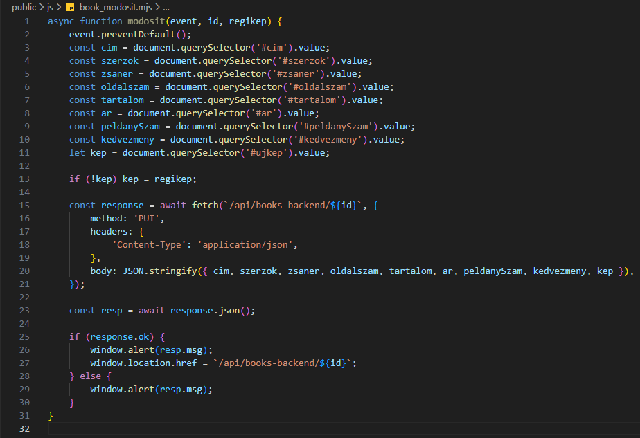

Egy könyv kezelése - book_modosit.mjs
Egy könyv kezelése - book_modosit.mjs
Ebben a részben szerkesztjük a public/js mappában egy könyv módosításához szükséges book_modosit.mjs állományt.
-
Szerkesszük a
book_modosit.mjsállományt.-
async function modosit(evet, id, regikep) {...}- egy könyv módosításáért felelősaszinkronfüggvény. -
event.preventDefault();- az adatok elküldése után ne frissüljön az oldal. -
if (!kep) kep = regikep;- ha nem állítunk be új képet, akkor használja a régit. -
const response = await fetch(`/api/books-backend/${id}`, {...});- afetchhívása után kapottpromise. -
method: 'PUT',- adatokat küldünk a szervernek, tehát ahttp PUT metódus-t használjuk. -
headers: { 'Content-Type': 'application/json' },- annak jelölése, hogy arequest bodytartalmátJSONformátumban fogjuk küldeni. -
body: JSON.stringify({...}),- csomagoljuk is be. -
const resp = await response.json();- a szervertől jövő válasz kicsomagolása, ha létezik. -
if (response.ok) { window.alert(resp.msg); window.location.href = `/api/books-backend/{id}`; }- ha sikeres a módosítás, akkor ezt írjuk ki és menjünk át a/api/books-backend/{id}route-ra. -
else { window.alert(resp.msg); }- ha nem sikeres a módosítás, akkor ezt írjuk ki.
-
-
Az eddigi munka letölthető formátumban:
backend_05.rar
Letöltés és kicsomagolás után aGitBashfelületen abackendmappában adjuk ki a következő utasítást:
npm install -
A webszerver futtatásához adjuk ki a következő utasítást a
GitBashfelületen:
node --watch ./src/server.mjs